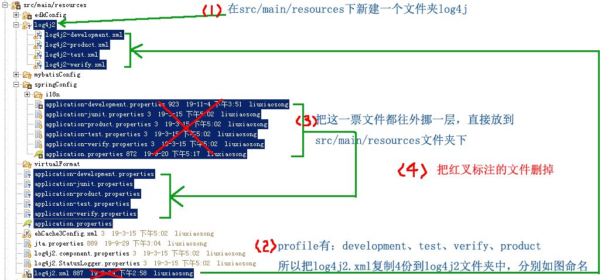

对于application.properties我们提供了按不同的profile进行配置的做法。对于运行日志文件也同样提供了套路，因为，不同环境保存日志的位置一般都不同，而且level要求也不同。
按profile分开配置的好处：对下面标红的部分，你不用每次发布前都手工改一遍。
<Properties>
<Property name="LOG_HOME">
/home/applicationLogs/yourProjectName-dev
</Property>
<Property name="PROJECT_NAME">
yourProjectName
</Property>
</Properties>
.....
....
（1）请删除项目中ApplicationBootConfig类中的@PropertySources({ @PropertySource(value = "classpath:application.properties") })；
（2）然后按下图的步骤调整资源文件结构：

（3）在每个application-{profile}.properties文件中，添加logging.config属性，指定其使用的日志配置文件，例如在application-development.properties中添加这句：
logging.config = classpath:log4j2/log4j2-development.xml